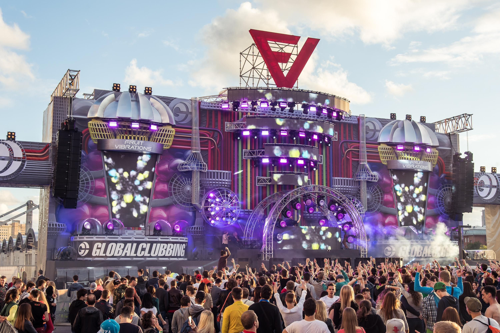
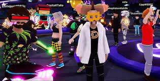
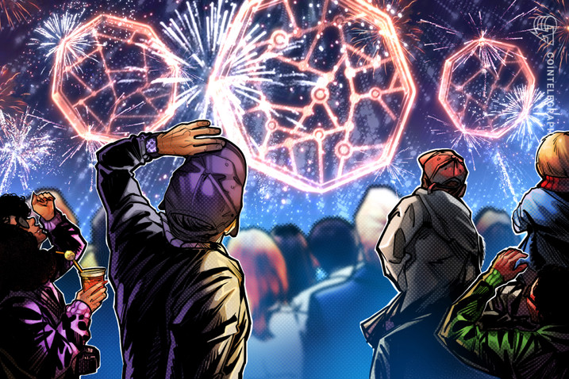
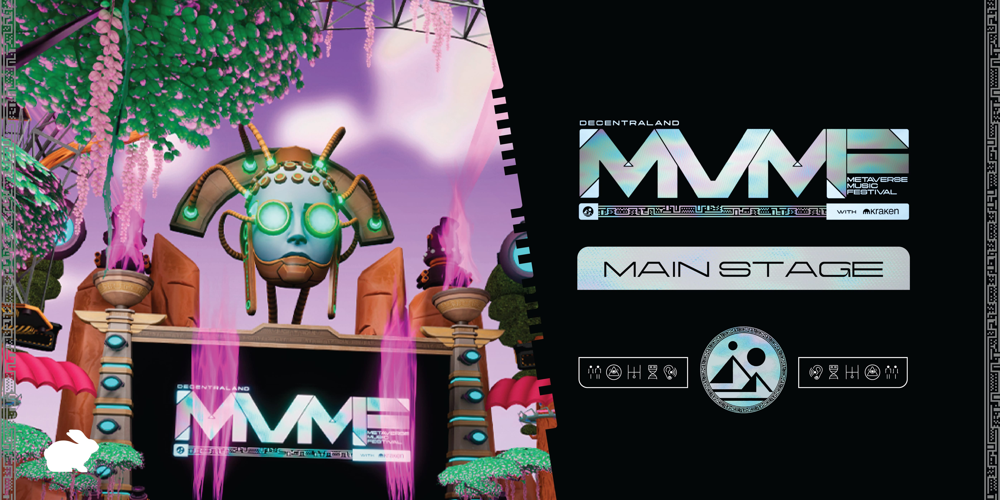

Festival season is going to look a little different this year. We sadly won’t be enjoying the vibrant atmosphere of our favourite summer fiestas – but we can still have a taste of the action by tuning into one of the virtual festivals taking place
Theme & Stage





In addition to an endless supply of musical performances, #DCLMVMF22 also offers multiple new experiences for you to explore.
- From the ‘Tower of Babel’, representing the festival’s theme of global community
- ‘Follow the White Rabbit’
- The Voice: Metaverse edition, and many other experiences besides, you’ll always have something to do
- if you never want the party to end, don’t worry, there are plenty of after parties planned during the festival as well!